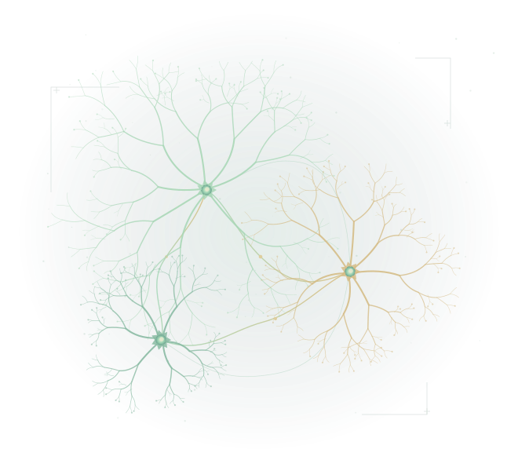

Circuit visualization
Map the connections
Viral tracing and axonal projection mapping reveal the architecture of neural pathways.
Feng Cao Lab · Behavioral Neuroscience
We explore the neural circuits that connect sensation, learning, and behavior—to understand how the brain responds and adapts to fear, pain, and other aversive experiences.

Neural connectivity · conceptual illustration01 / Our research
How does an aversive experience become a lasting change in the brain? We investigate this question across connected levels—from synapses and neural populations to behavior—with an interest in both typical brain function and disrupted circuitry.
Which connections shape our responses to aversive experiences?
We use viral tracing and targeted circuit manipulations to identify the neural populations involved in aversive responses, map their inputs and outputs, and examine how those connections contribute to behavior.
How does neural activity change as an animal experiences and learns?
Calcium imaging and fiber photometry let us follow activity in genetically defined neural populations during behavior. We study how these activity patterns evolve through aversive experiences and learning.
How do changes in a circuit translate into changes in behavior?
Mouse behavioral experiments connect neural circuit function with fear, pain perception, aversive taste, and anxiety-related behaviors. By pairing behavior with circuit manipulations, we investigate the contribution of specific neural pathways.
How does experience reshape the connections between neurons?
We investigate synaptic targets and experience-dependent changes in connection strength. This work links molecular and cellular mechanisms of synapse development and plasticity to aversive learning and memory.
02 / Our approaches
Understanding a circuit means knowing where its neurons connect, when they become active, and what happens when their activity changes. We bring complementary tools to each part of that question.
Circuit visualization
Viral tracing and axonal projection mapping reveal the architecture of neural pathways.
In vivo recording
Calcium imaging and fiber photometry capture neural dynamics during behavior.
Targeted manipulation
Optogenetic and chemogenetic approaches help reveal the roles of defined neural populations.
Synapses & behavior
Slice physiology and behavioral experiments link synaptic function with what an animal does.
03 / Meet the principal investigator
Assistant Professor · Behavioral Neuroscience
Dr. Feng Cao leads the Neural Circuits & Dynamics Lab in the Department of Psychology at Western Washington University. Her research brings together molecular, circuit, and behavioral approaches to understand aversive experience and the neural connections that support it.
Feng earned her Ph.D. in Physiology and Neuroscience at the University of Toronto in 2019, studying thalamocortical circuits in absence epilepsy and autism spectrum disorder. She then pursued postdoctoral research with Dr. Richard Palmiter at the Howard Hughes Medical Institute and the University of Washington.
During her postdoctoral training, Feng combined viral tools, chemogenetics, optogenetics, slice physiology, and in vivo recordings to investigate thalamic circuits involved in fear, aversion, and memory.
Her earlier master's research at Southeast University in Nanjing, China, focused on the molecular mechanisms of synaptic plasticity. She received the Connaught International Scholarship during her doctoral studies and is passionate about teaching behavioral neuroscience and mentoring the next generation of scientists.
University of Toronto
Physiology & Neuroscience · 2019
University of Washington / HHMI
Palmiter Lab
Research recognition
Brain & Behavior Research Foundation · Young Investigator Grant recipient
04 / Publications
Research connecting thalamic circuitry, synaptic function, and behavior.
Nature Communications · 16, 8517
Nature Communications · 11, 3744
Selected publications by Dr. Cao, including work completed during her previous training.
05 / Teaching & mentorship
Feng is passionate about teaching behavioral neuroscience and supporting the next generation of scientists. The lab's research connects questions about the brain with the experimental tools used to investigate them.
Interested in learning more about neuroscience at Western? Explore the Behavioral Neuroscience Program and its research opportunities.
Have a question about our research or an interest in learning more? Get in touch with Feng to start a conversation.
Introduce yourself06 / Contact
For research questions, collaboration inquiries, or an introduction, reach out to Feng.
Feng.Cao@wwu.eduFind us at Western
Behavioral Neuroscience Program
Department of Psychology
Western Washington University
Bellingham, Washington
Office & phone
Office AI 572
360-650-2216
Prospective students: include a little about your interests when you write, so we can start with what you are curious about.